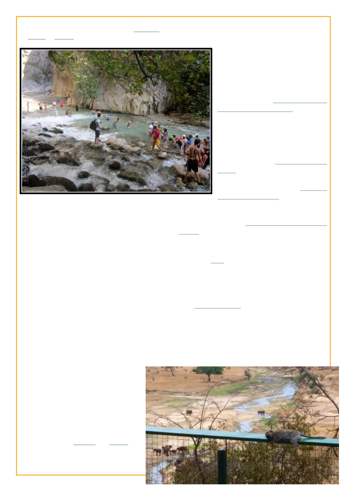

when he got submerged in Saklıkent
Gorge in Turkey a few months later.
Of course, most of the important part
of our conception of a character is based on
their actions and decisions, but there’s enough
of that before and after this in this livejournal,
so we’ll leave this description to a moment in
time, while our subject is looking thoughtfully
at his inflated classmate, at the guy who when
we were assigned to write “the story we’ve told
a thousand times” didn’t write anything
because he said he had no stories.
And slightly later in the season:
2014-06-30 - This morning I slept
through my alarm for an hour because I
couldn’t hear it over the rain. Fortunately I still
had half an hour before breakfast, and our ride
is running an hour plus late. Welcome to Africa
[Guinea].
I need to make a mental note to request
not to arrive on any future assignments at the
beginning of a weekend. Not knowing anyone
here yet, arriving to spend two days
cooped up in a third world hotel is not
very fun. On the bright side the internet
has been working so I finally beat the
game 2048.
Somehow I made it through this
Africa trip with only one bye when I
literally had no electricity or internet.
Posting from Sweden and France was
easier, but I hadn’t made it out of Africa
unscathed -- “Yesterday I froze and stared at the
bloody tissue. People get bloody noses all the time
right? I don’t get bloody noses, I can’t
remember ever having had a bloody
nose before, but it’s normal. But the
doctor had called just the day before to
confirm that I didn’t have it -- “ebola.”
When I calmed down, naturally, I
thought to myself “it’s probably about
It appears I was eliminated that
September after week 22, but that
season they had a “Second Chance
Idol” from which you could get back in,
and I wrote some of my favorite entries
there, including Defending the
Realm (a version of which I think
might have ended up in another
anthology somewhere) and How the
Numbat Got Her Coat which I’ve never
found the right writing contest/anthology to submit it
to but I think its worthy of going somewhere, I am
quite fond of it. And “In the Basement of a Space
Station“ was another classic.
This got me back into the main competition just
in time to be posting from East Africa
(Now I’m in Arusha deep in the interior
of Tanzania, and its hot and dusty and the touts,
the people who follow you around the streets
saying “my friend, my friend!” are like swarms
of flies here, and I miss Zanzibar a lot); and
“Note: at the time of posting (and of the writing
of this whole entry) I am in the field near the
base of Mt Kiliminjaro, at the town of Moshi,
Tanzania. Using the mobile wifi hotspot
function on my phone to post this!”
-- which got me eliminated from Season 9 in the 28th
week.
 LiveJournal
LiveJournal Dreamwidth
Dreamwidth